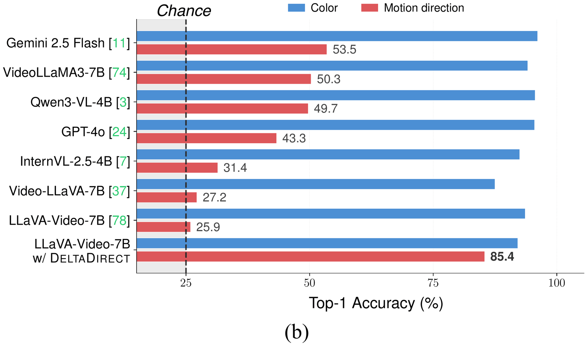

NeurIPS 2026, Sydney
Which Way Did It Move? Diagnosing and Overcoming Directional Motion Blindness in Video-LLMs
1Kyung Hee University 2Princeton University *Equally contributed first authors †Corresponding author
TL;DR On simple videos of a single object moving left, right, up, or down, most Video-LLMs perform near chance. We trace the failure to a direction binding gap and introduce MoDirect and DeltaDirect, which raise MoDirect-SynBench accuracy from 25.9% to 85.9%.
An animation in nine scenes. A yellow circle moves from left to right over eight video frames. Asked for its color, the Video-LLM correctly answers Yellow. Asked which way it moved, it answers Leftward, which is wrong. We call this failure directional motion blindness: LLaVA-Video-7B scores 25.9% on MoDirect-SynBench, where chance is 25%. Why? Linear probes still decode the direction inside the model, at 99.8% after the vision encoder, 96.5% after the projector and 95.3% in the LLM, but the answer is correct only 27.6% of the time: the direction is not bound to the answer. DeltaDirect strengthens the motion signal at the projector, and accuracy on MoDirect-SynBench rises from 25.9% to 85.9%.
Recent Video-LLMs correctly identify the object’s color but answer the wrong motion direction.
Summary
-
1Find
Video-LLMs get an object’s color right, but not which way it moved.
25.9%direction accuracy of LLaVA-Video-7B, where chance is 25%
-
2Diagnose
The direction is decodable inside the model, but not bound to the answer.
95.3% vs. 27.6%a linear probe in the LLM vs. the model’s own answer
-
3Fix
MoDirect and DeltaDirect improve direction understanding without changing inference.
25.9% → 85.9%MoDirect-SynBench accuracy with DeltaDirect
Read the abstract
Video Large Language Models (Video-LLMs) have made rapid progress on temporal video understanding, yet many fail at a basic perceptual primitive: signed image-plane motion direction. On simple videos of a single object moving left, right, up, or down, most Video-LLMs perform near chance, with above-chance cases largely attributable to prediction biases rather than genuine direction understanding. We call this failure directional motion blindness. We localize the failure by tracing motion direction information through the Video-LLM pipeline. Motion direction remains linearly accessible from the vision encoder, projector, and LLM hidden states, but the readout fails to bind this signal to the correct verbal answer option, revealing a direction binding gap. Although synthetic motion direction instruction tuning reduces this gap on the source domain, motion direction concept vector analysis shows that visual complexity weakens the signal magnitude and limits out-of-domain generalization. We introduce MoDirect, a dataset family for motion direction instruction tuning and evaluation, and DeltaDirect, a diagnosis-driven, projector-level objective that predicts normalized 2-D motion vectors from adjacent-frame feature deltas. On MoDirect-SynBench, instruction tuning with DeltaDirect improves motion direction accuracy from 25.9% to 85.9%. On MoDirect-RealBench, DeltaDirect improves real-world motion direction accuracy by 21.4 points over the vanilla baseline without real-world tuning data, while preserving standard video-understanding performance.
Directional motion blindness
On a seemingly trivial synthetic video of a yellow circle moving from left to right, most Video-LLMs show accuracy close to random chance (25%), with GPT-5 only reaching 58.9%. We refer to this systematic failure to distinguish signed motion directions as directional motion blindness.

MoDirect
A dataset family for signed image-plane motion direction. Its synthetic part is a controlled 2×2 design over foreground type and background type, and every video contains a single object moving in one of four directions.
- left
- right
- up
- down
Primitive-on-Syn6,000 videos
Primitive-on-Real6,000 videos
Cutout-on-Syn6,000 videos
Cutout-on-Real6,000 videos
MoDirect-Inst
100,000 video–QA pairs built from the Primitive-on-Syn domain.
MoDirect-SynBench
Four domains with 6,000 videos each. Four-way multiple choice; chance is 25%.
MoDirect-RealBench
Curated from Something-Something-V2 (722), KTH (899), and TOMATO (403).
Where does directional motion blindness arise?
We trace motion direction information through LLaVA-Video, from visual representations to the answer token.
Direction is decodable, but not converted into the answer
A Video-LLM passes the video through a vision encoder, a projector, and an LLM. A linear probe can read the motion direction at every one of these stages, yet the model’s own answer is correct only 27.6% of the time, near the 25% chance level. The best input-side scaffold reaches only 34.7%. We call this mismatch the direction binding gap.
- How often a linear probe reads the direction at that stage
- How often the model answers correctly
- Chance is 25% for both.
The gap persists across architectures and scales: a shared structural limitation rather than a model-specific artifact.

Tuning closes the gap in domain; out of domain, the signal is too weak
After tuning on MoDirect-Inst, logit lens accuracy converges to probing accuracy and MCQ accuracy on Primitive-on-Syn rises from 27.6% to 99.5%. But the gap reopens out of domain: 0.3 points on Primitive-on-Syn, 12.1 points on Cutout-on-Real. The motion direction concept vectors still align across domains, but their magnitude drops with visual complexity. Restoring only the magnitude recovers up to 15.5 points on Cutout-on-Real: the out-of-domain failure is a magnitude deficit, not a missing motion direction geometry.
Show Figure 4: the gap closing on the source domain


DeltaDirect
The diagnosis points to one place to intervene: make the projector output carry a stronger signed displacement signal before it enters the LLM. DeltaDirect is a training-only auxiliary objective that does exactly that.
An 18-second animation of a Video-LLM drawn as stacked layers: input video, vision encoder, projector and LLM. During training, one small motion head is attached at the projector: a single linear layer with 2D + 2 parameters. The projector features of each frame are pooled into one vector, adjacent frames are subtracted, and the head predicts the motion vector from that difference. At inference the head is removed, at zero extra cost, and the projector keeps the motion signal: the model answers Right.
-
1
Pool the difference of projector features between adjacent frames into a motion-change descriptor.
-
2
A linear head with only 2D+2 parameters predicts the normalized 2-D motion vector, supervised by the known object motion in MoDirect-Inst.
-
3
The branch is removed at inference: input format, token sequence, and decoding procedure stay unchanged.
Show Figure 6 and the equations

Motion-change descriptor from adjacent-frame projector features
Normalized 2-D motion target from the object centers
Linear prediction head
Motion Vector Prediction (MVP) loss
Total training objective
Results
MoDirect-SynBench
25.9% → 85.9%
Average accuracy of LLaVA-Video-7B, before and after tuning with DeltaDirect. Chance: 25%.
MoDirect-RealBench
43.1% → 64.5%
+21.4 points over the vanilla baseline, without real-world tuning data. Chance: 39.7%.
Standard video benchmarks
69.4 → 69.8
Average over five benchmarks for LLaVA-Video-7B. General video understanding is preserved.
Table 1: every model, every domain
Tables 2–3: where and what to supervise
Table 4: general video benchmarks
BibTeX
@inproceedings{lee2026deltadirect,
title = {Which Way Did It Move? Diagnosing and Overcoming
Directional Motion Blindness in Video-LLMs},
author = {Lee, Jongseo and Lee, Hyuntak and Kim, Sunghun and
Kim, Sooa and Chung, Jihoon and Choi, Jinwoo},
booktitle = {Advances in Neural Information Processing Systems (NeurIPS)},
year = {2026}
}